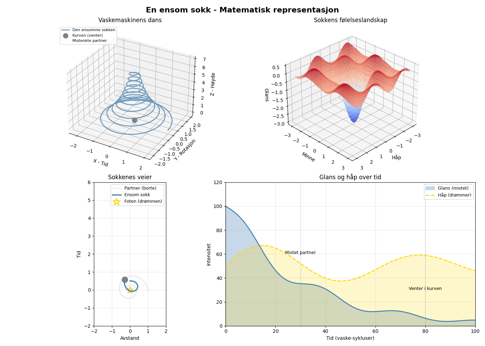

En ensom sokk i vaskemaskinens dans, mistet sin partner og all sin glans. Nå drømmer den om en fot å få bo på, mens den venter i kurven, grå og små.

import matplotlib.pyplot as plt
import numpy as np
from mpl_toolkits.mplot3d import Axes3D
# Create figure with multiple subplots
fig = plt.figure(figsize=(14, 10))
fig.suptitle('En ensom sokk - Matematisk representasjon', fontsize=16, fontweight='bold')
# Subplot 1: Washing machine spiral dance (the lonely sock's journey)
ax1 = fig.add_subplot(221, projection='3d')
t = np.linspace(0, 20*np.pi, 1000)
r = np.exp(-t/30) * 2 # Spiral that fades inward (loneliness)
x1 = r * np.cos(t)
y1 = r * np.sin(t)
z1 = t/10
# The lonely sock - fading spiral
ax1.plot(x1, y1, z1, 'steelblue', linewidth=2, alpha=0.8, label='Den ensomme sokken')
ax1.scatter([0], [0], [0], color='gray', s=100, marker='o', label='Kurven (venter)')
# Lost partner - ghost spiral (dashed, fading away)
x2 = r * np.cos(t + np.pi) * 1.1
y2 = r * np.sin(t + np.pi) * 1.1
z2 = z1 + 0.5
ax1.plot(x2, y2, z2, 'lightgray', linewidth=1, linestyle='--', alpha=0.4, label='Mistenkte partner')
ax1.set_xlabel('X - Tid')
ax1.set_ylabel('Y - Rotasjon')
ax1.set_zlabel('Z - Høyde')
ax1.set_title('Vaskemaskinens dans')
ax1.legend(loc='upper left', fontsize=8)
# Subplot 2: Emotional landscape - sadness surface
ax2 = fig.add_subplot(222, projection='3d')
x = np.linspace(-3, 3, 100)
y = np.linspace(-3, 3, 100)
X, Y = np.meshgrid(x, y)
# Sadness function - a valley of loneliness
Z = -np.exp(-(X**2 + Y**2)) * 3 + np.sin(X*2) * np.cos(Y*2) * 0.5
# Plot surface with colormap representing emotion
surf = ax2.plot_surface(X, Y, Z, cmap='coolwarm', alpha=0.8, edgecolor='none')
ax2.set_xlabel('Håp')
ax2.set_ylabel('Minne')
ax2.set_zlabel('Glans')
ax2.set_title('Sokkens følelseslandskap')
ax2.view_init(elev=30, azim=45)
# Subplot 3: The two socks - convergence and separation
ax3 = fig.add_subplot(223)
t3 = np.linspace(0, 10, 500)
# Partner sock trajectory (disappears)
partner_x = np.exp(-t3/3) * np.cos(t3 * 2)
partner_y = np.exp(-t3/3) * np.sin(t3 * 2)
# Lonely sock trajectory (remains, oscillating in waiting)
lonely_x = 0.5 * np.sin(t3 * 0.5) * np.exp(-t3/20)
lonely_y = 0.5 * np.cos(t3 * 0.5) * np.exp(-t3/20) + t3 * 0.05
ax3.plot(partner_x, partner_y, 'lightgray', linewidth=2, alpha=0.5, label='Partner (borte)')
ax3.plot(lonely_x, lonely_y, 'steelblue', linewidth=2.5, label='Ensom sokk')
ax3.scatter([lonely_x[-1]], [lonely_y[-1]], color='gray', s=150, marker='o', zorder=5)
ax3.scatter([0], [0], color='white', s=200, marker='*', edgecolors='gold', linewidths=2, label='Foten (drømmen)')
ax3.set_xlim(-2, 2)
ax3.set_ylim(-2, 6)
ax3.set_xlabel('Avstand')
ax3.set_ylabel('Tid')
ax3.set_title('Sokkenes veier')
ax3.legend(loc='upper right', fontsize=9)
ax3.set_aspect('equal', adjustable='box')
ax3.grid(True, alpha=0.3)
# Subplot 4: Glans over time - fading brilliance
ax4 = fig.add_subplot(224)
t4 = np.linspace(0, 100, 500)
# Glans function - exponential decay
glans = 100 * np.exp(-t4/30) + 10 * np.sin(t4/5) * np.exp(-t4/50)
# Hope curve - oscillating dream
hope = 20 * np.sin(t4/10) * np.exp(-t4/100) + 50
ax4.fill_between(t4, 0, glans, alpha=0.3, color='steelblue', label='Glans (mistet)')
ax4.plot(t4, glans, 'steelblue', linewidth=2)
ax4.plot(t4, hope, 'gold', linewidth=2, linestyle='--', label='Håp (drømmer)')
ax4.fill_between(t4, 0, hope, alpha=0.2, color='gold')
# Mark key moments
ax4.axvline(x=30, color='gray', linestyle=':', alpha=0.5)
ax4.annotate('Mistet partner', xy=(30, 60), fontsize=9, ha='center')
ax4.axvline(x=80, color='gray', linestyle=':', alpha=0.5)
ax4.annotate('Venter i kurven', xy=(80, 30), fontsize=9, ha='center')
ax4.set_xlabel('Tid (vaske-sykluser)')
ax4.set_ylabel('Intensitet')
ax4.set_title('Glans og håp over tid')
ax4.legend(loc='upper right', fontsize=9)
ax4.set_xlim(0, 100)
ax4.set_ylim(0, 120)
ax4.grid(True, alpha=0.3)
plt.tight_layout()
plt.savefig(output_path)execution_ok=True fallback_used=False image_ok=True